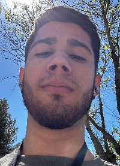

Alberto Prada | WDD 130
My name is Alberto Prada, I am Venezuelan currently residing in Portugal. My fascination with web development is undeniable; I constantly immerse myself in the exploration and learning of new technologies to enhance my skills in this field. In addition to my passion for programming, I also have other interests that enrich my life. One of them is sports, and currently, I am focused on one in particular: calisthenics. For me, practicing calisthenics goes beyond keeping fit; it represents a balance between body and mind. Every bodyweight exercise I perform is a challenge that motivates me to surpass my physical limits, while I find mental peace and satisfaction in every achievement reached.